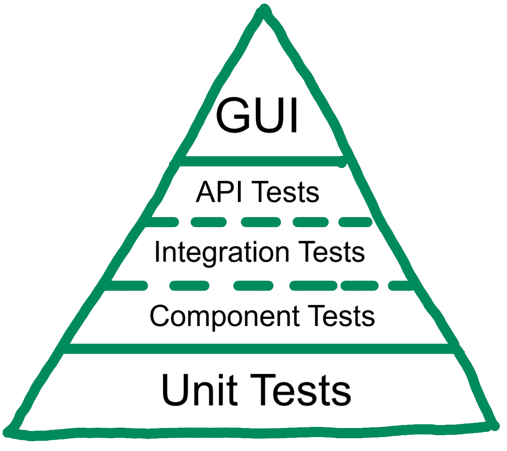
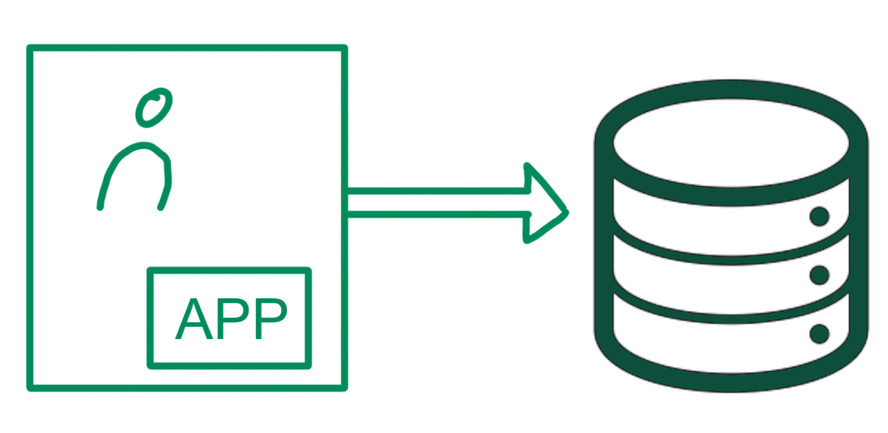
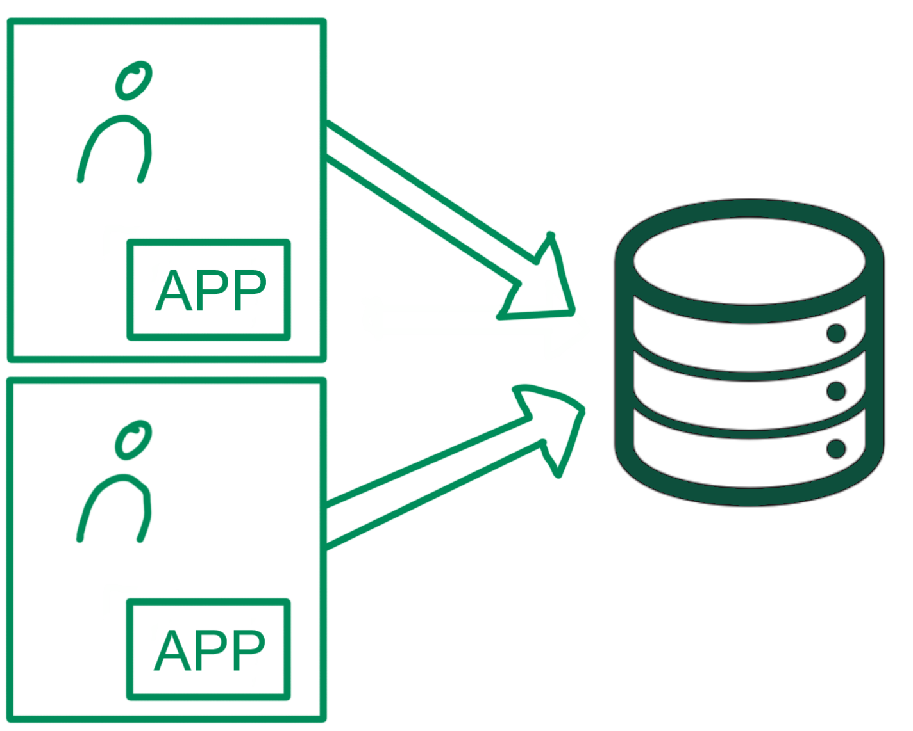
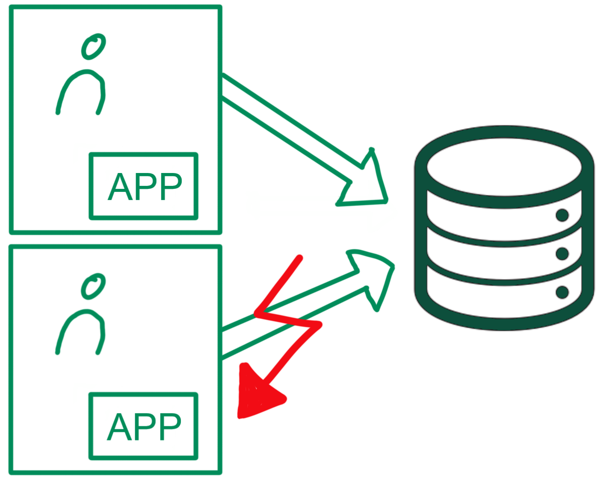
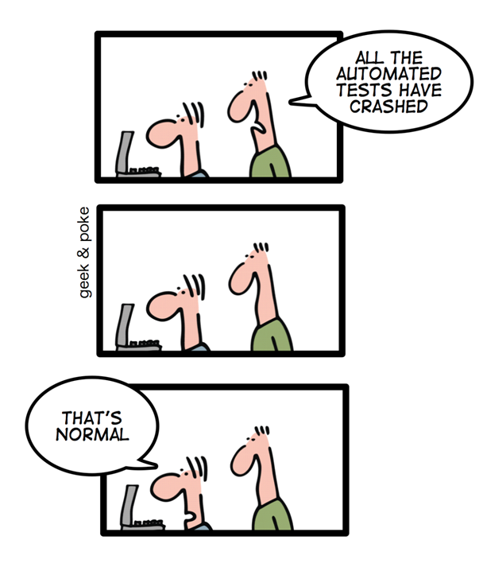
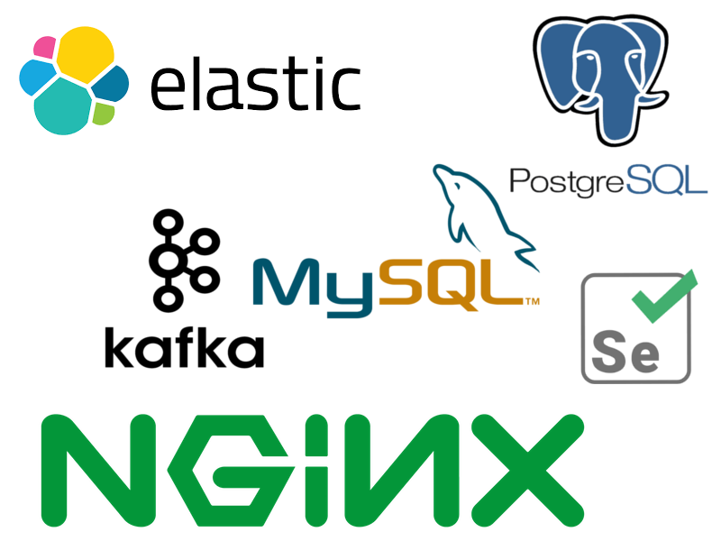
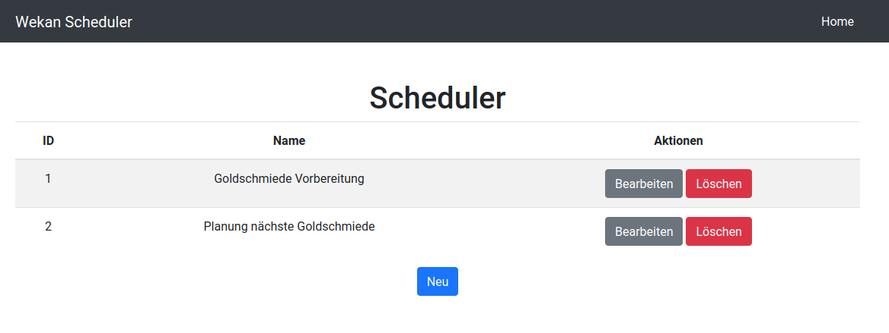
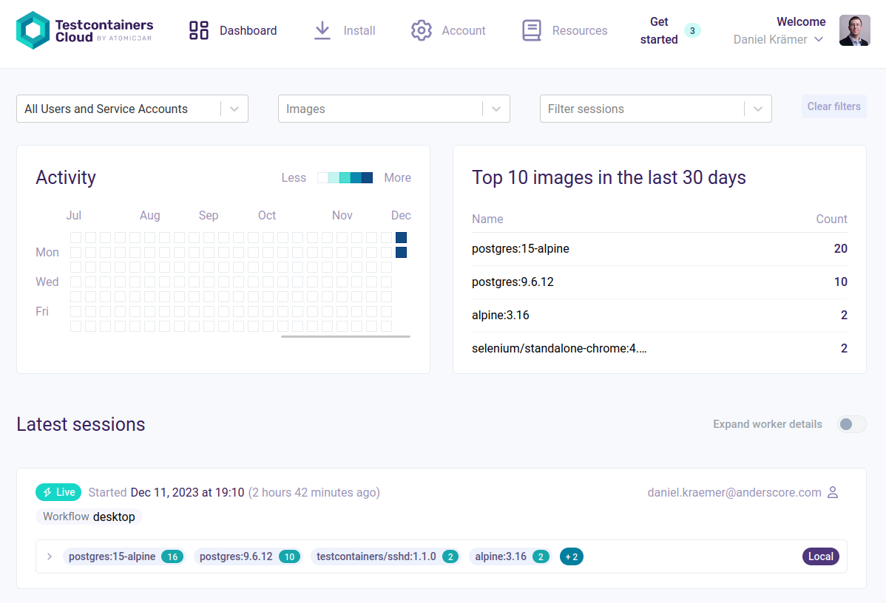
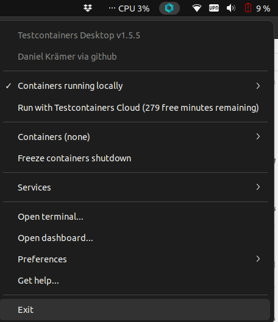

@anderScoreGmbH
 anderScore.company
anderScore.company
 Java_Meetup_anderscore
Java_Meetup_anderscore
Moderne Integration Tests mit Testcontainers

Vorstellung
Daniel Krämer
Senior Software Engineer & Architect
Migration und Integration
DevOps
Testautomatisierung
Trainings, Vorträge, Artikel
 dkraemer-anderscore
dkraemer-anderscore
Unternehmen
Individuelle Anwendungsentwicklung - Java Enterprise, Web, Mobile
- seit 2005 ♦ in Köln ♦ für alle Branchen ♦
- nach Aufwand & zum Festpreis
- Digitalisierung / Prozesse / Integration
- Migration
- Neuentwicklung
- Notfall / kritische Situationen
- pragmatisch, zielgerichtet, zuverlässig

Kompletter SW Life Cycle
- Projektmanagement / agile Methodik
- Anforderungsanalyse
- Architektur & SW-Design
- Implementierung & Testautomation
- Studien & Seminare
... und für Sie? Sprechen Sie uns an!
Test-Pyramide

Warum Integration Tests?
Herausforderung Integration Test
Fremdsysteme
Erreichbarkeit
Datenhoheit
Zustand
Performance
Nebenläufigkeit
Unterschiedliche Umgebungen
Software
Versionen
Datenbankschema
Konfiguration
Erreichbarkeit der Datenbank

Erreichbarkeit der Datenbank

Erreichbarkeit der Datenbank

Erreichbarkeit der Datenbank

Was würde uns helfen?
Einheitlichkeit
Reproduzierbarkeit
Kontrolle
Lokalität
Nähe zur Produktion
Testcontainers
Sprachübergreifende Bibliothek
MIT Lizenz
Aktuelle Version: 1.19.3 (November 2023)
Einsatzszenarien
Integration Tests (DB, Message Broker, etc.)
Anwendungstests (UI, Use Cases)
Einheitliche lokale Umgebung
Technologien
Docker
JUnit 4/5
Live Demo
Zeit für eine Live Demo!
Was kann Testcontainers sonst noch?
GenericContainer
Fertiges Docker Image
On-the-fly Docker Image (Dockerfile DSL)
Ausführen oder Überschreiben von Commands
Fluent API
Ports, Environment Variables
Shell Commands
Log Consumer
GenericContainer alpine =
new GenericContainer(DockerImageName.parse("alpine:3.19"))
.withExposedPorts(80)
.withEnv("MAGIC_NUMBER", "42")
.withCommand("/bin/sh", "-c",
"while true; do echo \"$MAGIC_NUMBER\" | nc -l -p 80; done");Was kann Testcontainers sonst noch?
Netzwerk
Externe Ports zufällig
Zugang zu Host Ports möglich
Container-Netzwerke
Network network = Network.newNetwork();
GenericContainer foo = new GenericContainer(...)
.withNetwork(network)
.withNetworkAliases("foo");
GenericContainer bar = new GenericContainer(...)
.withNetwork(network);Was kann Testcontainers sonst noch?
Logs
Auslesen (stdout, stderr)
Streamen
Slf4jLogConsumer logConsumer = new Slf4jLogConsumer(LOGGER);
container.followOutput(logConsumer);Module
DBMS (u.a. PostgreSQL, MySQL, DB2, Cassandra, Neo4j)
ElasticSearch
Kafka
Solr
HashiCorp Vault
Nginx
Webdriver (Selenium, inkl. VNC)

Frontend - GUI


Frontend - Test
@LocalServerPort
private Integer port;
// [...]
Testcontainers.exposeHostPorts(port);
BrowserWebDriverContainer<?> container = new BrowserWebDriverContainer<>()
.withCapabilities(new ChromeOptions())
.withRecordingMode(RECORD_FAILING, new File("target/"));
container.start();
RemoteWebDriver driver = new RemoteWebDriver(container.getSeleniumAddress(), new ChromeOptions());
// [...]
assertEquals("Scheduler", driver.findElement(By.tagName("h1")).getText());
driver.findElement(By.id("new")).click();
// [...]Testcontainers Cloud
Auslagerung der Container in die Cloud
Statistiken (Dashboard)
Remote Debugging
Freies Kontingent + Payed Service

Testcontainers Desktop
Umschalten zwischen lokaler Ausführung und Cloud
Anhalten und Debuggen von Containern
Verfügbar für Linux, Mac und Windows

Pitfalls
Zufällige Ports
Fixe DataSource im SpringContext
Kommunikation mit anderen Containern und Host
The good, the bad & the ugly
The good
Einfache Verwendung
Übersichtliche, stabile API
Verständliche Dokumentation
Gute Integration mit JUnit 4 und 5 sowie Spring Boot
Vielfältig einsetzbar
Skalierung über Testcontainers Cloud möglich

The bad
Performance und Ressourcenverbrauch
Parallele Testausführung eingeschränkt
The ugly
Internes Datenmodell
public class PostgreSQLContainer<SELF extends PostgreSQLContainer<SELF>> extends JdbcDatabaseContainer<SELF> {
[...]
}JdbcDatabaseContainer<?> container = new PostgreSQLContainer<>();Links
Testcontainers Dokumentation: https://www.testcontainers.org
Docker Dokumentation: https://docs.docker.com
Vortrag Sergei Egorov (Mitentwickler Testcontainers): https://www.youtube.com/watch?v=rv-NxOTMvDQ (Russisch)
Folien + Demo: https://github.com/anderscore-gmbh/itt-23
Fragen?

Ende
Vielen Dank!
@anderScoreGmbH
 anderScore.company
anderScore.company
 Java_Meetup_anderscore
Java_Meetup_anderscore